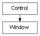

class cymel.ui.window.Window¶

- class cymel.ui.window.Window(*args, **kwargs)¶
Bases:
Controlwindow wrapper class for mel UI.
setParent can be done with
with.Methods:
changeToDockControl([allowedArea, area])Turn the window into a docking control.
children()Get all child controls of the window.
delete()Delete the window.
layout()Gets one layout that the window has.
layouts()Get all the layouts a window has.
Make this the current parent.
name()Get window name.
parent()Parents can't get it.
show()Show window.
window()Get this window itself.
Method Details:
- UICMD()¶
- changeToDockControl(allowedArea=('left', 'right'), area=None, **kwargs)¶
Turn the window into a docking control.
- Return type:
- delete()¶
Delete the window.
- makeCurrent()¶
Make this the current parent.
- parent()¶
Parents can’t get it.
- Return type:
None
- show()¶
Show window.